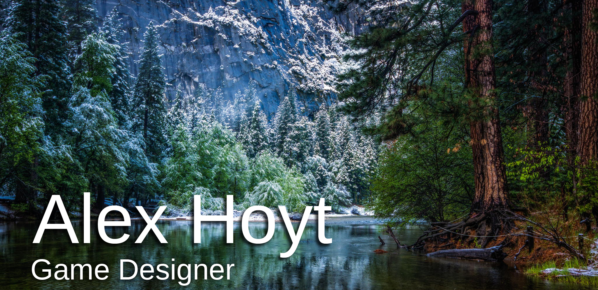

Projects
C++
Android
Javascript
CMPM 146 AI Group Project

Project Date - March 8th 2016
Team - Alex Hoyt, Kyle Cilia, Blake Williams and Gavin Mack
AI project focused on coevolution and procedural generation. This group project was made my
senior year at UCSC. Our goal for this project was to use Kate Compton's procedurally generated
flower project as a base and then create bees that coevolve when a user selects a tree.
CMPS 20 Javascript Game